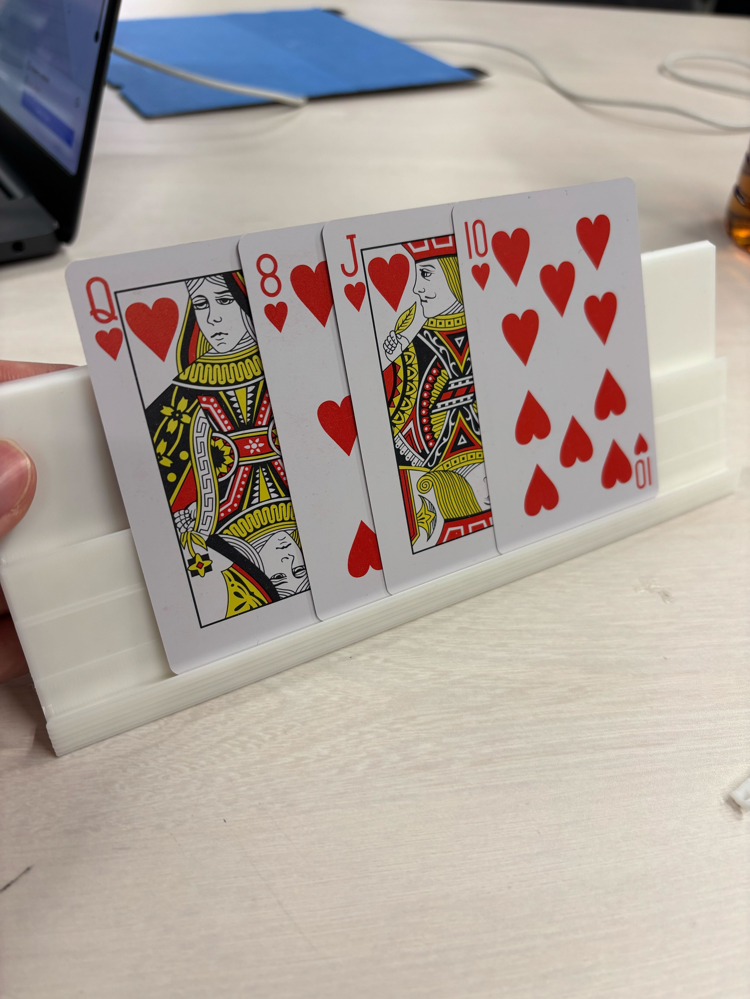
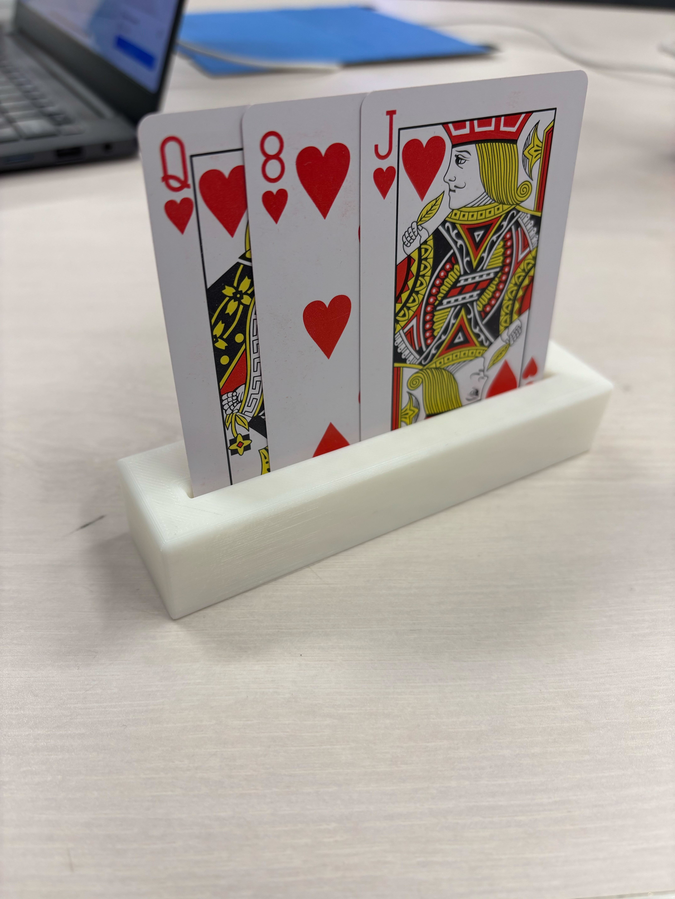
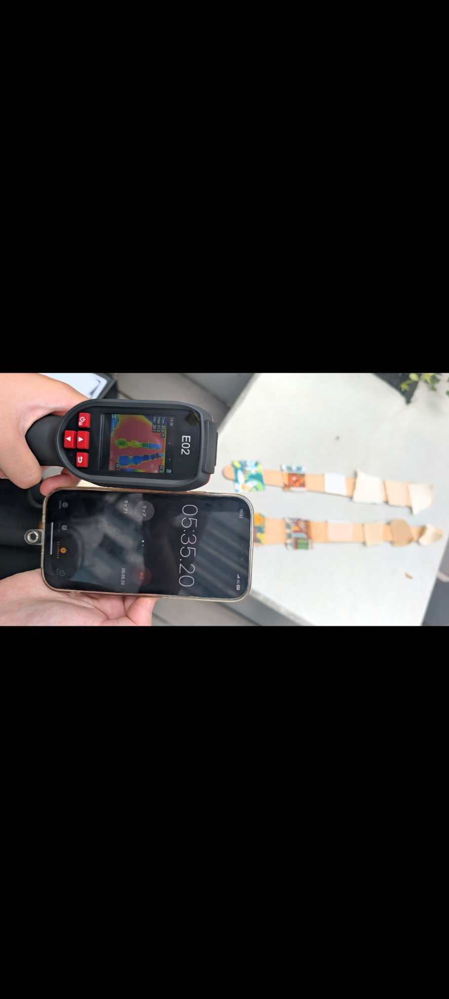
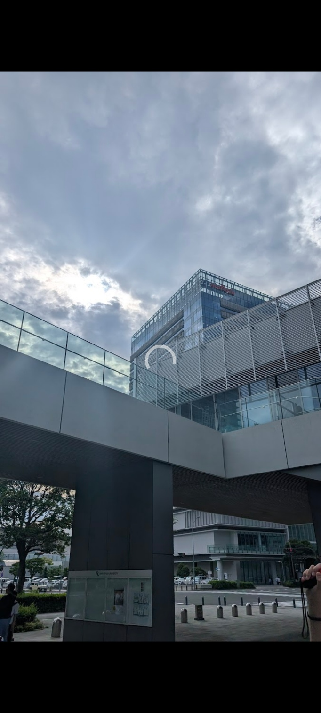
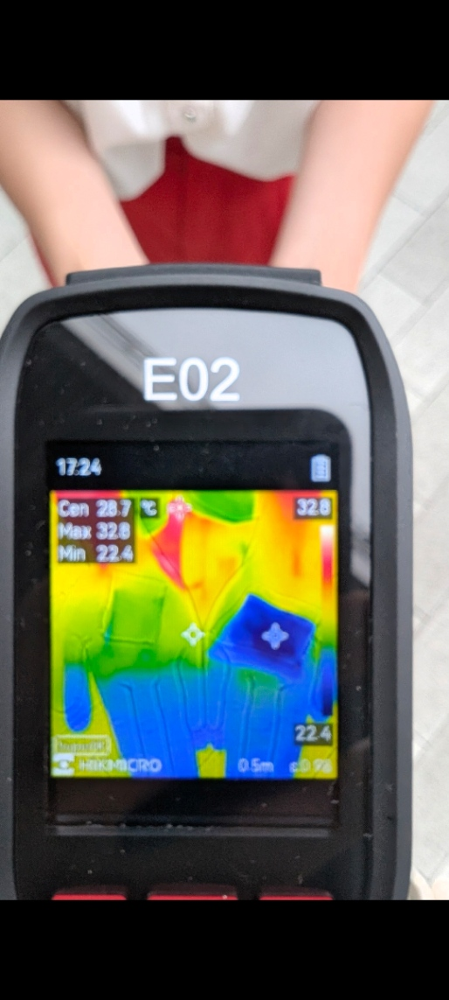
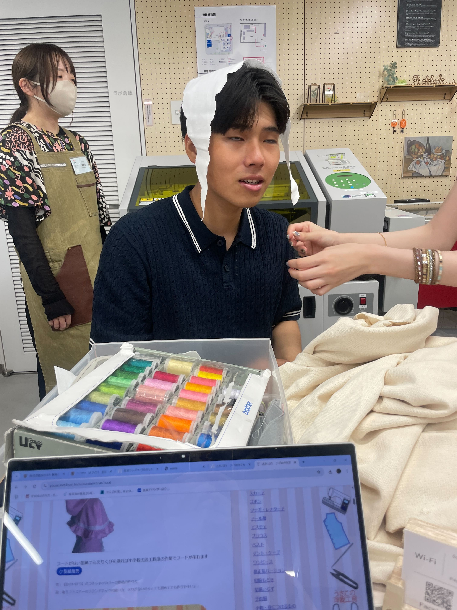
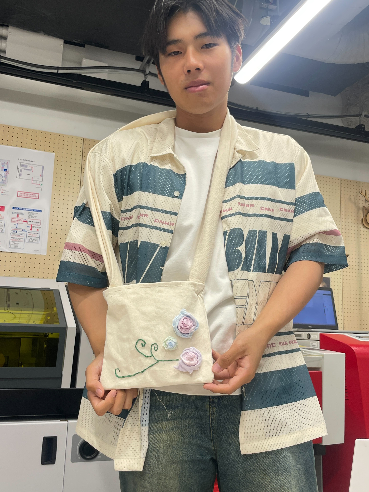
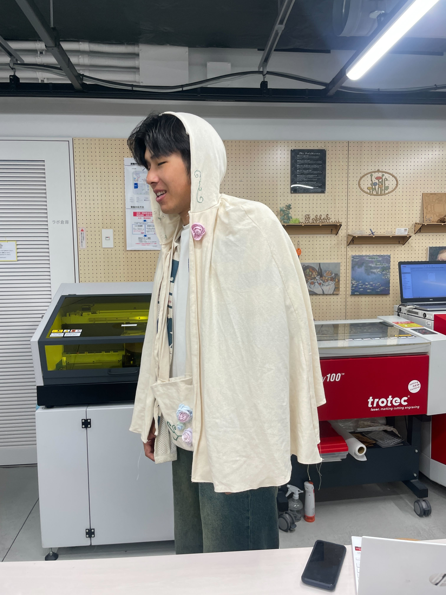

XBP
ゼミ一覧
4月18日 インタビュー練習
4月25日 共起ネットワーク 復習 確認
5月16日 取り組む課題チーム決め 手がマヒして上手く使えない人でもトランプを楽しめるように 腕を作る 遊戯王のデュエルディスクみたいにする 角のクッションを子どもが勝手に取らないようにしたい 全部くっつける パズルのようにして外したらムズムズするようにする
5月30日 片手だけでトランプできるように台を作る パーティションを作り保持し続けなくていいようにする
写真のサイズが全然変わりません


6月6日 アイデアだし 代替品の視点が多かった 個人的にはサンダルを作ってみたい 代替ではなく新たな役割・ポジションであるべきだがもっと発想の転換が必要
6月16日 紙布の遮熱効果がどれくらいあるかの検証をした。


6月27日 部活 ラフティングの日本代表選考会 勝てるわけがなかった
7月4日 最終発表に向けたスライド作成

7月18日 最終発表 プロダクトの作成については他のメンバーにかなりやってもらった。なのでとても感謝している。改めて新しいアイデアを生み出すことへの知識と引き出しが少ないことに気づかされた。
- 最終発表資料


